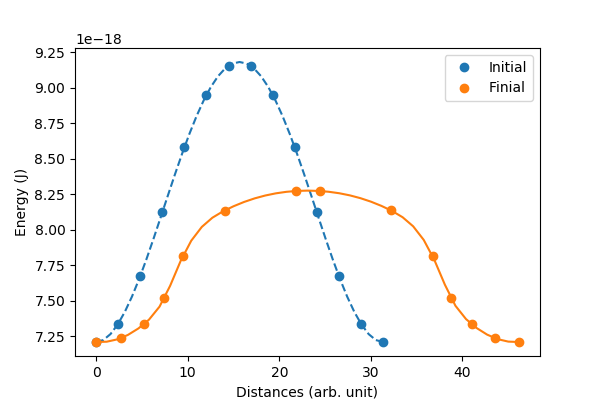

Tutorial
An example – vortex
To start a micromagnetic simulation, we first create a FDMesh
mesh = FDMesh(dx=2e-9, dy=2e-9, dz=2e-9, nx=100, ny=100)After that, we create a simulation
sim = Sim(mesh, name="vortex")and set the damping to 0.5 and switch off the precession term in LLG equation:
sim.driver.alpha = 0.5
sim.driver.precession = falseThe geometry of the system can be defined by
set_Ms(sim, circular_Ms)where circular_Ms could be a scalar or a function. The function should take six parameters (i,j,k,dx,dy,dz), for instance
function circular_Ms(i,j,k,dx,dy,dz)
if (i-50.5)^2 + (j-50.5)^2 <= 50^2
return 8.6e5
end
return 0.0
endWe add the exchange interaction and the demagnetization field to the system.
add_exch(sim, 1.3e-11)
add_demag(sim)We need to initialise the system which can be done by defining a function
function init_fun(i,j,k,dx,dy,dz)
x = i-50.5
y = j-50.5
r = (x^2+y^2)^0.5
if r<5
return (0,0,1)
end
return (y/r, -x/r, 0)
endand using
init_m0(sim, init_fun)To trigger the simulation we relax the system
relax(sim, maxsteps=1000)How to enable GPU
Using FDMeshGPU instead of FDMesh to switch on the GPU calculation,
mesh = FDMeshGPU(dx=2e-9, dy=2e-9, dz=2e-9, nx=100, ny=100)The script to use GPU to obtain the vortex structure is shown below:
using JuMag
using Printf
using NPZ
JuMag.cuda_using_double(true)
mesh = FDMeshGPU(dx=2e-9, dy=2e-9, dz=5e-9, nx=100, ny=100, nz=4)
function circular_Ms(i,j,k,dx,dy,dz)
x = i-50.5
y = j-50.5
r = (x^2+y^2)^0.5
if (i-50.5)^2 + (j-50.5)^2 <= 50^2
return 8e5
end
return 0.0
end
function init_fun(i,j,k,dx,dy,dz)
x = i-50.5
y = j-50.5
r = (x^2+y^2)^0.5
if r<5
return (0,0,1)
end
return (y/r, -x/r, 0)
end
function relax_system()
sim = Sim(mesh, driver="SD", name="sim")
set_Ms(sim, circular_Ms)
add_exch(sim, 1.3e-11, name="exch")
add_demag(sim)
init_m0(sim, init_fun)
relax(sim, maxsteps=2000, stopping_torque=1.0, save_vtk_every = 100, save_m_every=-1)
npzwrite("m0.npy", sim.spin)
end
relax_system()Standard Problem #4
using JuMag
using Printf
using NPZ
mesh = FDMeshGPU(nx=200, ny=50, nz=1, dx=2.5e-9, dy=2.5e-9, dz=3e-9)
function relax_system(mesh)
sim = Sim(mesh, name="std4_relax", driver="SD")
set_Ms(sim, 8.0e5)
sim.driver.min_tau = 1e-10
add_exch(sim, 1.3e-11)
add_demag(sim)
init_m0(sim, (1, 0.25, 0.1))
relax(sim, maxsteps=5000, stopping_torque=10.0)
npzwrite("m0.npy", Array(sim.spin))
end
function apply_field1(mesh)
sim = Sim(mesh, name="std4_dyn")
set_Ms(sim, 8.0e5)
sim.driver.alpha = 0.02
sim.driver.gamma = 2.211e5
mT = 0.001 / (4*pi*1e-7)
add_exch(sim, 1.3e-11)
add_demag(sim)
add_zeeman(sim, (-24.6*mT, 4.3*mT, 0))
init_m0(sim, npzread("m0.npy"))
for i=1:100
run_until(sim, 1e-11*i)
end
end
relax_system(mesh)
println("Start step2 !!!")
apply_field1(mesh)
println("Run step2 again!!!")
@time apply_field1(mesh)
println("Done!")The output file is a simple text compatible with Gnuplot, like used for plot below.

A NEB example (vortex core reversal)
The magnetic vortex core can either point up or point down. In this example, we will compute the energy barrier between this two states. We will use NEB (Nudged elastic band) method.
To begin, we need to prepare this two states which can be done by defining two initial functions init_m_point_up and init_m_point_down. After running the following script, two states in the format of OVF2 (up.ovf and down.ovf) will be saved.
using JuMag
using Printf
JuMag.cuda_using_double(true)
mesh = FDMeshGPU(dx=2e-9, dy=2e-9, dz=5e-9, nx=100, ny=100, nz=4)
function circular_Ms(i,j,k,dx,dy,dz)
x = i-50.5
y = j-50.5
r = (x^2+y^2)^0.5
if (i-50.5)^2 + (j-50.5)^2 <= 50^2
return 8e5
end
return 0.0
end
function init_m_point_up(i,j,k,dx,dy,dz)
x = i-50.5
y = j-50.5
r = (x^2+y^2)^0.5
if r<5
return (0,0,1)
end
return (y/r, -x/r, 0)
end
function init_m_point_down(i,j,k,dx,dy,dz)
x = i-50.5
y = j-50.5
r = (x^2+y^2)^0.5
if r<5
return (0,0,1)
end
return (y/r, -x/r, 0)
end
function relax_system(init_fun, name)
sim = Sim(mesh, driver="SD", name="sim")
set_Ms(sim, circular_Ms)
add_exch(sim, 1.3e-11, name="exch")
add_demag(sim)
init_m0(sim, init_fun)
relax(sim, maxsteps=2000, stopping_torque = 1.0)
save_ovf(sim, name)
end
for (init_m, name) in [(init_m_point_up, "up"), (init_m_point_down, "down")]
relax_system(init_m, name)
endAfter generating the two states we are interested in, we can use NEB method. In JuMag, we have a pure CPU version of NEB and a GPU version which supports multiple GPUs with the helper of MPI. In this example, we will use the latter, i.e., NEB_MPI. Typically, three parameters are needed to start the NEB simulation:
- sim – an instance of MicroSimGPU.
- initm – an array that contains at least two ends states. If you have more information about the middle states, you can put it into initm array.
- interpolations – an array to contain the number of interpolations between given states. So length(interpolations) must equal to length(init_m) - 1.
So the typical usage is given as follows
function relax_neb()
ovf1 = read_ovf("down.ovf")
ovf2 = read_ovf("up.ovf")
sim = create_sim()
init_m = [ovf1.data, ovf2.data]
interpolations = [12]
neb = NEB_MPI(sim, init_m, interpolations, driver="LLG")
relax(neb, maxsteps=10000, stopping_dmdt = 0.5, save_ovf_every=500)
endIn the function relax_neb we called create_sim which is very similar to the function relax_system, actually, two functions should have exactly the same micromagnetic parameters. Here, to save GPU memory we do not use any driver (by setting driver="none") and let save_data=false when creating the Sim instance.
function create_sim()
mesh = FDMeshGPU(dx=2e-9, dy=2e-9, dz=5e-9, nx=100, ny=100, nz=4)
sim = Sim(mesh, name="sim", driver="none", save_data=false)
set_Ms(sim, circular_Ms)
init_m0(sim, (0,0,1))
add_demag(sim)
add_exch(sim, 1.3e-11)
return sim
endMoreover, if you are going to use multiple GPUs, you need to add JuMag.using_multiple_gpus(), the number of GPUs will be set to the number of processes of MPI. Put it all together, the script is given by
using JuMag
using CuArrays
using Printf
JuMag.cuda_using_double(true)
CuArrays.allowscalar(false) #important for performance
JuMag.using_multiple_gpus()
function create_sim()
mesh = FDMeshGPU(dx=2e-9, dy=2e-9, dz=5e-9, nx=100, ny=100, nz=4)
sim = Sim(mesh, name="sim", driver="none", save_data=false)
set_Ms(sim, circular_Ms)
init_m0(sim, (0,0,1))
add_demag(sim)
add_exch(sim, 1.3e-11)
return sim
end
function circular_Ms(i,j,k,dx,dy,dz)
x = i-50.5
y = j-50.5
r = (x^2+y^2)^0.5
if (i-50.5)^2 + (j-50.5)^2 <= 50^2
return 8e5
end
return 0.0
end
function relax_neb()
ovf1 = read_ovf("vortex_down.ovf")
ovf2 = read_ovf("vortex_up.ovf")
sim = create_sim()
neb = NEB_MPI(sim,(ovf1.data, ovf2.data),(12), driver="LLG")
relax(neb, maxsteps=10000, stopping_dmdt=1.0, save_ovf_every=500)
end
relax_neb()The Slurm script two use two GPUs:
#!/bin/bash
#SBATCH --nodes=1 # Number of nodes
#SBATCH --ntasks=2 # Number of MPI processes
#SBATCH --cpus-per-task=1 # Number of CPUs per task
#SBATCH --gres=gpu:2 # Number of GPUs
mpiexec -np 2 julia main.jl
Monte Carlo (M-T curve)
We can use Monte Carlo to compute the M-T curve. For the atomistic model with $z$ nearest neighbors, the relation between exchange constant and $T_c$ reads [1]
where $\epsilon$ is a correction factor. For 3D classical Heisenberg model $\epsilon \approx 0.719$. In this example, we will assume $J=300k_B$ which gives $T_c = 431 K$. The full script is shown below.
using JuMag
using Random
JuMag.cuda_using_double(true)
function relax_system(T)
mesh = CubicMeshGPU(nx=30, ny=30, nz=30, pbc="xyz")
sim = MonteCarloNew(mesh, name="mc")
init_m0(sim, (0,0,1))
add_exch(sim, J=300*k_B)
add_dmi(sim, D=0, D1=0)
add_zeeman(sim, Hx=0, Hy=0, Hz=0)
add_anis(sim, Ku=0, Kc=0)
sim.T = 100000
run_sim(sim, maxsteps=50000, save_vtk_every=-1, save_m_every=-1)
sim.T = T
run_sim(sim, maxsteps=200000, save_vtk_every=-1, save_m_every=-1)
ms = zeros(1000)
sim.T = T
for i = 1:1000
run_sim(sim, maxsteps=100, save_vtk_every=-1, save_m_every=-1)
t = JuMag.average_m(sim)
ms[i] = sqrt(t[1]^2+t[2]^2+t[3]^2)
end
return sum(ms)/length(ms)
end
f = open("M_H.txt", "w")
write(f, "#T(K) m \n")
for T = 10:20:500
println("Running for $T ...")
m = relax_system(T)
write(f, "$T $m \n")
end
close(f)The obtained M-T curve is shown as follows, where the obtained $T_c$ is closed to 440 K.s 
[1] Atomistic spin model simulations of magnetic nanomaterials, J. Phys.: Condens. Matter 26 (2014) 103202.